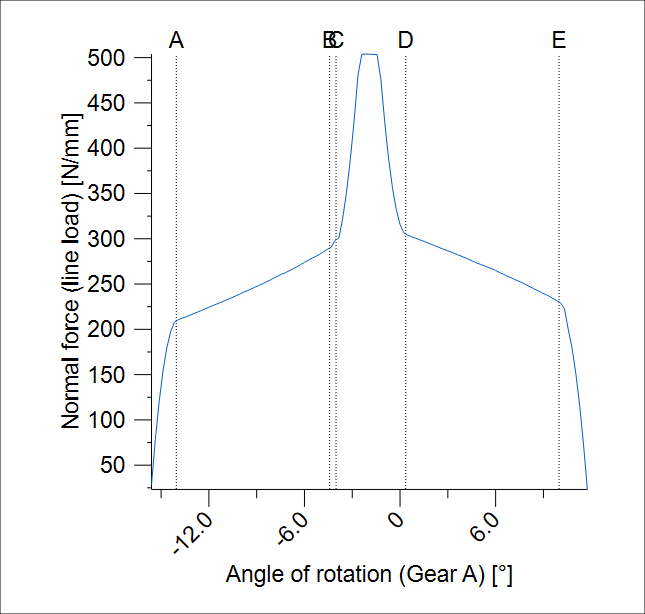
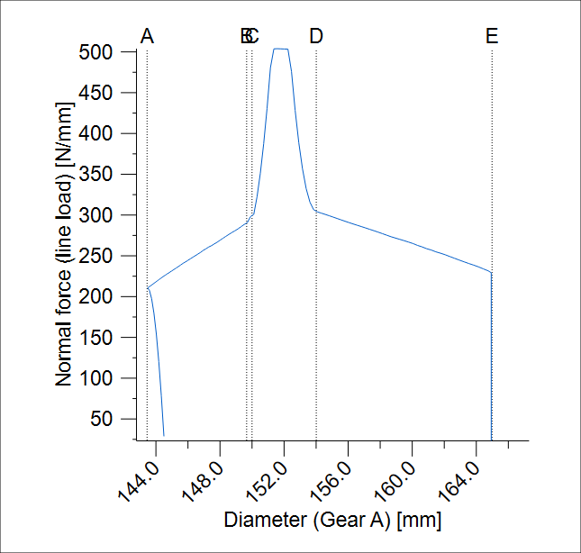
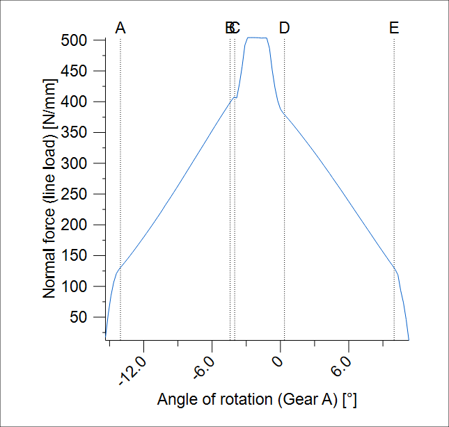
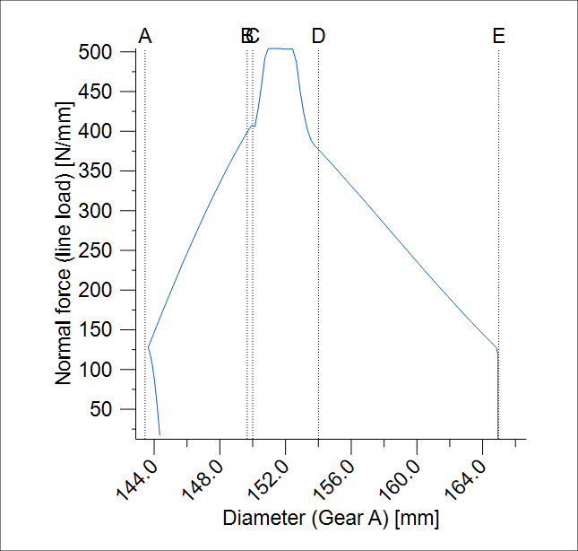
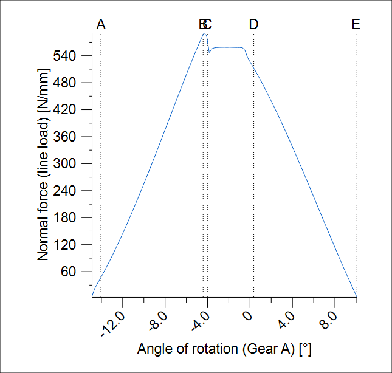
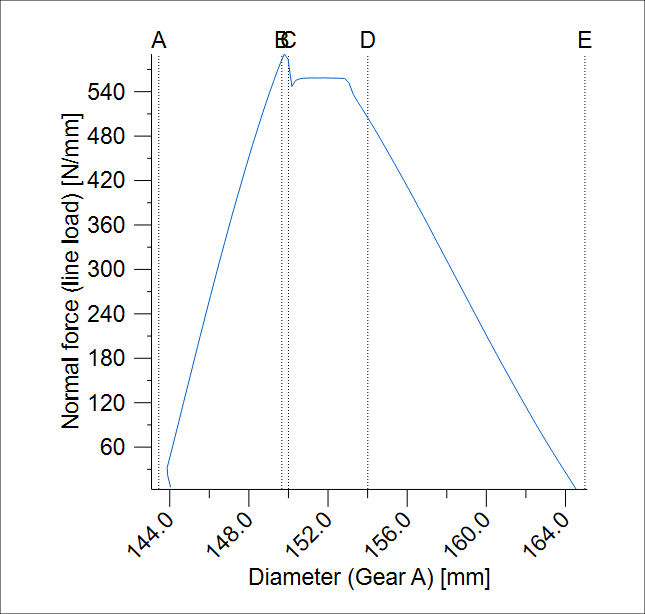

|
|
|


图中啮合
你可以从下拉列表中选择 X 轴的不同取值。此处可以选取滚角、长度（啮合线长度）、齿轮 A 的直径以及转角。
注意
如果你选择 X 轴的转角，齿轮轴线是 0°。
在每张显示啮合线长度 A-E 的图形中，如 ISO 21771 所定义的，必须记住这些特定点对于非变形齿对的计算是按照 ISO 21771 中的规定进行的，没有修改。接触分析考虑了齿的弯曲。根据所使用的齿形修改方式，这会创建一个更早发生且更长的接触。如果例如以角度（或滚角、啮合线长度）作为 X 轴，这种现象很明显。相反，如果以直径作为 X 轴，力图看起来就不同。提前啮合从齿根稍高的点开始，然后垂直向下直到到达点 A。只有到达点 A 后，才会向齿尖方向延伸。因此，力图根据所选择的 X 轴而不同。
在特殊情况下，涉及较大的齿形修形时，如果齿接触不再延伸到齿顶，并且啮合线偏离理论轨迹（见图15.103），这会导致极其显著的差异。齿形修形会增加转角的范围。


图15.101: 无任何修形的齿形的法向力曲线；左: 通过转角显示；右: 通过直径显示


图15.102: 低齿形鼓形修整的齿形的法向力曲线（啮合发生在齿顶）


图15.103: 一种特殊情况下的法向力曲线，具有更高的载荷和更大的齿形鼓形修整（啮合不发生在齿顶）
Meshing in the diagrams
You can select different values for the X-axis from a drop-down list. Here, you can select the roll angle, the length (length of path of contact), the diameter of gear A and the angle of rotation.
Note
If you select the angle of rotation for the X-axis, the gear axis is 0°.
In every graphic that displays the length of path of contact A-E as defined in ISO 21771, you must remember that these particular points for the non-deformed tooth pair are calculated without modifications, as specified in ISO 21771. Contact analysis takes tooth bending into account. Depending on which tooth modification is used, this creates a contact that occurs earlier and is also longer. This is clearly visible if, for example, normal force is displayed with the angle of rotation (or roll angle, length of path of contact) as the X-axis. In contrast, the force diagram looks different if the diameter is displayed as the X-axis. The premature meshing starts at a slightly higher point on the tooth root and then moves vertically downwards until point A is reached. Only then does it run in the direction of the tooth tip. The force diagram therefore varies, depending on which X-axis is selected.
In special cases, involving large profile modifications, this results in extremely significant differences if the tooth contact no longer runs to the tooth tip and the path of contact varies from the theoretical progression (see Figure 15.103). The profile modifications increase the range of the angle of rotation.
Figure 15.101: Normal force curve for toothing without any modifications; left: display via the angle of rotation; right: via the diameter
Figure 15.102: Normal force curve for toothing with low profile crowning (meshing occurs up to the tooth tip)
Figure 15.103: Special case of a normal force curve with a higher load and greater profile crowning (meshing does not occur up to the tooth tip)